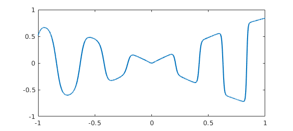
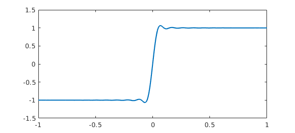
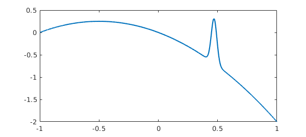
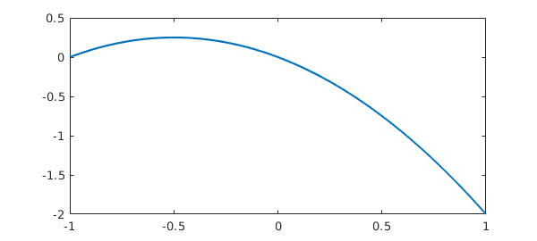
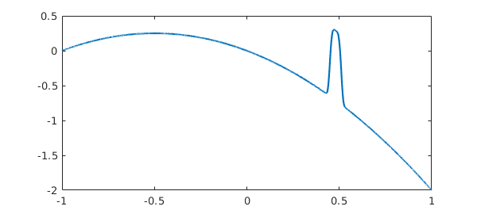
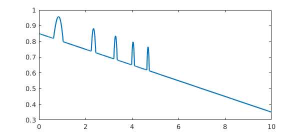
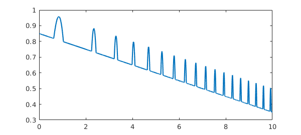
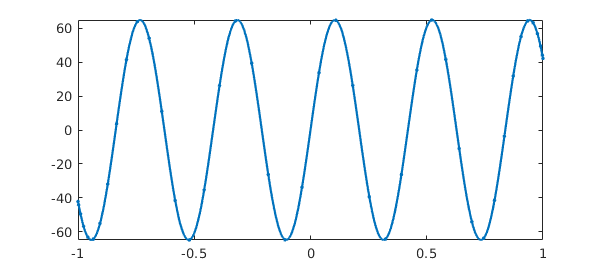
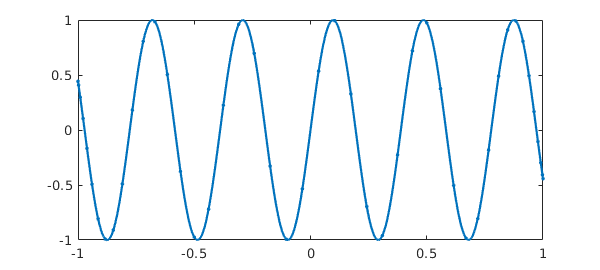
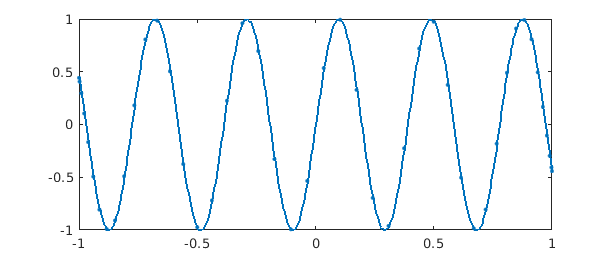

8.1 Introduction
Like any software package, Chebfun is based on certain design decisions. Some of these can be adjusted by the user, like the maximum number of points at which a function will be sampled before Chebfun gives up trying to resolve it. Extensive information about these possibilities can be found by executing help chebfunpref, or for chebops, as used to solve integral and differential equations, help cheboppref. To see the list of preferences and their current values, execute chebfunpref or cheboppref:
chebfunpref
chebfunpref object with the following preferences:
domain: [-1, 1]
splitting: 0
splitPrefs
splitLength: 160
splitMaxLength: 6000
blowup: 0
blowupPrefs
exponentTol: 1.100000e-11
maxPoleOrder: 20
defaultSingType: 'sing'
enableDeltaFunctions: 1
deltaPrefs
deltaTol: 1.000000e-09
proximityTol: 1.000000e-11
cheb2Prefs
maxRank: 513
sampleTest: 1
tech: @chebtech2
techPrefs
eps: 2.220446049250313e-16
minSamples: 17
maxLength: 65537
fixedLength: NaN
extrapolate: 0
sampleTest: 1
refinementFunction: 'nested'
happinessCheck: 'classic'
More detailed information from further down in the preference structure will come from, for example, help chebtech/techpref.
To ensure that all preferences are set to their factory values, execute
chebfunpref.setDefaults('factory')
In this chapter we explore some of these adjustable preferences, showing how special effects can be achieved by modifying them. Besides showing off some useful techniques, this review will also serve to deepen the user's understanding of Chebfun by poking about a bit at its edges.
A general point to be emphasized is the distinction between creating a chebfun directly from the constructor and creating one by operating on previous chebfuns. In the former case we can include preferences directly in the constructor command, and we recommend this as good practice:
f = chebfun('x.^x',[0,1],'splitting','on');
In the latter case, however, one can turn the preference on and off again.
x = chebfun('x',[0,1]);
chebfunpref.setDefaults('splitting',true)
f = x.^x;
chebfunpref.setDefaults('splitting',false)
8.2 domain: the default domain
Like Chebyshev polynomials themselves, chebfuns are defined by default on the domain $[-1,1]$ if no other domain is specified. However, this default choice of the default domain can be modified. For example, we can work with trigonometric functions on $[0,2\pi]$ conveniently like this:
chebfunpref.setDefaults('domain',[0 2*pi])
f = chebfun(@(t) sin(19*t));
g = chebfun(@(t) cos(20*t));
plot(f,g), axis equal, axis off

8.3 splitting: breaking into subintervals or not
Perhaps the preference that users wish to control most often is the choice of splitting off or on. Splitting off is the factory default.
In both splitting off and splitting on modes, a chebfun may consist of a number of pieces, called funs. For example, even in splitting off mode, the following sequence makes a chebfun with four funs:
chebfunpref.setDefaults('factory');
x = chebfun(@(x) x);
f = min(abs(x),exp(x)/6);
format short, f.ends
plot(f)
ans = -1.0000 -0.1443 0 0.2045 1.0000
One breakpoint is introduced at $x=0$, where the constructor determines that $|x|$ has a zero, and two more breakpoints are introduced at $-0.1443$ and at $0.2045$, where it recognizes that $|x|$ and $\exp(x)/6$ will intersect.
The difference between splitting off and splitting on pertains to additional breakpoints that may be introduced in the more basic chebfun construction process, when the constructor makes a chebfun solely by sampling point values. For example, suppose we try to make the same chebfun as above from scratch, by sampling an anonymous function, in splitting off mode. We get a warning message:
ff = @(x) min(abs(x),exp(x)/6); f = chebfun(ff);
Warning: Function not resolved using 65537 pts. Have you tried 'splitting on'?
With splitting on, Chebfun's built-in edge detector quickly finds the singular points and introduces breakpoints there:
f = chebfun(ff,'splitting','on'); f.ends
ans = -1.0000 -0.1443 0.0000 0.2045 1.0000
This example involves specific points of singularity, which the constructor has duly located. In addition to this, in splitting on mode the constructor will subdivide intervals recursively at non-singular points when convergence is not taking place fast enough. For example, with splitting off we cannot successfully construct a chebfun for the square root function on $[0,1]$ (unless we use singular exponents as described in the next chapter):
f = chebfun(@(x) sqrt(x),[0 1]);
Warning: Function not resolved using 65537 pts. Have you tried 'splitting on'?
With splitting on, however, all is well:
f = chebfun(@(x) sqrt(x),[0 1],'splitting','on'); length(f) format long, f((.1:.1:.5)'.^2)
ans = 515 ans = 0.100000000057983 0.200000000011776 0.300000000012712 0.400000000008074 0.500000000010248
Inspection reveals that Chebfun has broken the interval into a succession of pieces, each 100 times smaller than the next:
f.ends
ans =
Columns 1 through 3
0 0.000000000100000 0.000000010000000
Columns 4 through 6
0.000001000000000 0.000100000000000 0.010000000000000
Column 7
1.000000000000000
In this example the subdivisions have occurred near an endpoint, for the edge detector has determined that the difficulty of resolution lies there. For other functions, however, splitting will take place at midpoints. For example, here is a function that is complicated throughout $[-1,1]$, especially for larger values of $x$.
ff = @(x) sin(x).*tanh(3*exp(x).*sin(15*x));
With splitting off, it gets resolved by a global polynomial of rather high degree.
f = chebfun(ff); length(f) plot(f)
ans =
1346

With splitting on, the function is broken up into pieces, and there is some reduction in the overall length:
f = chebfun(ff,'splitting','on'); length(f) format short, f.ends
ans =
826
ans =
Columns 1 through 7
-1.0000 -0.7500 -0.5000 -0.2500 0 0.2500 0.3750
Columns 8 through 12
0.5000 0.6250 0.8125 0.8750 1.0000
When should one use splitting off, and when splitting on? If the goal is simply to represent complicated functions, especially when they are more complicated in some regions than others, splitting on sometimes has advantages. An example is given by the function above posed on $[-3,3]$ instead of $[-1,1]$. With splitting off, the global polynomial has a degree in the tens of thousands:
f3 = chebfun(ff,[-3 3]); length(f3) plot(f3)
ans =
16009

With splitting on the representation is much more compact:
f3 = chebfun(ff,[-3 3],'splitting','on'); length(f3)
ans =
2827
On the other hand, splitting off mode has advantages of robustness. In particular, operations involving derivatives generally work better when functions are represented by global polynomials, and chebops for the most part require this. Also, for educational purposes, it is very convenient that Chebfun can be used so easily to study the properties of pure polynomial representations even of very high degree.
8.4 splitLength: length limit in splitting on mode
When intervals are subdivided in splitting on mode, as just illustrated, the parameter splitLength determines where this will happen. With the factory value splitLength=160, splitting will take place if a polynomial of length 160 proves insufficient to resolve a fun. (Actually, when Chebfun uses Chebyshev points of the second kind as it does by default, this number is rounded down to 1 more than a power of 2.) Let us confirm for the chebfun f constructed a moment ago that the lengths of the individual funs are all less than or equal to 160 (actually 129):
f.funs
ans =
Columns 1 through 4
[66x1 bndfun] [79x1 bndfun] [88x1 bndfun] [90x1 bndfun]
Columns 5 through 8
[124x1 bndfun] [31x1 bndfun] [97x1 bndfun] [62x1 bndfun]
Columns 9 through 11
[79x1 bndfun] [76x1 bndfun] [34x1 bndfun]
Alternatively, suppose we wish to allow individual funs to have length up to 513. We can do that like this:
f = chebfun(ff,'splitting','on','splitLength',513); length(f) format short, f.ends f.funs
ans =
1175
ans =
-1.0000 0 0.5000 0.7500 1.0000
ans =
[344x1 bndfun] [305x1 bndfun] [252x1 bndfun] [274x1 bndfun]
8.5 maxLength: maximum length
As just mentioned, in splitting off mode, the constructor tries to make a global chebfun from the given string or anonymous function. For a function like $|x|$ or $\hbox{sign}(x)$, this will typically not be possible and we must give up somewhere. The parameter maxLength, set to $2^{16}+1$ in the factory, determines this giving-up point.
For example, here's what happens normally if we try to make a chebfun for sign(x).
f = chebfun('sign(x)');
Warning: Function not resolved using 65537 pts. Have you tried 'splitting on'?
Suppose we wish to examine the interpolant to this function through 50 points instead of 65537. One way is like this:
f = chebfun('sign(x)',50);
length(f)
plot(f)
ans =
50

Notice that no warning message is produced since we have asked explicitly for exactly 50 points. On the other hand we could also change the default maximum to this number (or more precisely the default degree to one less than this number), giving the same effect though now with another warning message:
f = chebfun('sign(x)','maxLength',50);
length(f)
Warning: Function not resolved using 50 pts. Have you tried 'splitting on'?
ans =
33
Perhaps more often one might wish to adjust this preference to enable use of especially high degrees. On the machines of 2014, Chebfun is perfectly capable of working with polynomials of degrees in the millions. The function $|x|^{5/4}$ on $[-1,1]$ provides an example, for it is smooth enough to be resolved by a global polynomial, provided it is of rather high degree:
tic
f = chebfun('abs(x).^1.25','maxLength',1e6);
lengthf = length(f)
format long, sumf = sum(f)
plot(f)
toc
lengthf =
105185
sumf =
0.888888888881000
Elapsed time is 1.852304 seconds.

(More efficient ways of resolving this function, by eliminating the singularity, are described in Chapter 9.)
8.6 minSamples: minimum number of sample points
At the other end of the spectrum, the preference minSamples determines the minimum number of points at which a function is sampled during the chebfun construction process, and the factory value of this parameter is 17. This does not mean that all chebfuns have length at least 17. For example, if $f$ is a cubic, then it will be sampled at 17 points, Chebyshev expansion coefficients will be computed, and 13 of these will be found to be of negligible size and discarded. So the resulting chebfun is a cubic, even though the constructor never sampled at fewer than 17 points.
f = chebfun('x.^3');
lengthf = length(f)
lengthf =
4
More generally a function is sampled at $17, 33, 65,\dots$ points until a set of Chebyshev coefficients are obtained with a tail judged to be negligible.
Like any process based on sampling, this one can fail. For example, here is a success:
f = chebfun('-x -x.^2 + exp(-(30*(x-.47)).^2)');
length(f)
plot(f)
ans = 309

But if we change the exponent to 4, we get a failure:
f = chebfun('-x -x.^2 + exp(-(30*(x-.47)).^4)');
length(f)
plot(f)
ans =
3

What has happened can be explained as follows. The function being sampled has a narrow spike near $x=0.47$, and the closest grid points lie near $0.383$ and $0.556$. In the case of the exponent 2, we note that at $x=0.383$ and $x=0.556$, $\exp(-(30(x-.47)^2))$ takes values of about $0.001$, which are easily large enough to be noticed by the Chebfun constructor. On the other hand in the case of exponent 4, the values at these points shrink to less than $10^{-19}$, which is below machine precision. So in the latter case the constructor thinks it has a quadratic and does not try a finer grid.
If we increase minSamples, the correct chebfun is found:
f = chebfun('-x -x.^2 + exp(-(30*(x-.48)).^4)','minSamples',33);
length(f)
plot(f)
ans =
1021

Incidentally, if the value of minSamples specified is not one greater than a power of 2, it is rounded up to the next such value.
The factory value minSamples=17 was chosen as a compromise between efficiency and reliability. (Until Version 5, the choice was `minSamples=9'.) In practice it rarely seems to fail, but perhaps it is most vulnerable when applied in splitting on mode to functions with narrow spikes. For example, the following chebfun is missing most of the spikes that should be there:
ff = @(x) max(.85,sin(x+x.^2)) - x/20; f = chebfun(ff,[0,10],'splitting','on'); plot(f)

Increasing minSamples fills them in:
f = chebfun(ff,[0,10],'splitting','on','minsamples',33); plot(f)

8.7 resampling: exploiting nested grids or not
We now turn to a particularly interesting preference for Chebfun geeks, relating to the very idea of what it means to sample a function.
When a chebfun is constructed, a function is normally sampled at $17, 33, 65,\dots$ Chebyshev points until convergence is achieved. (We are speaking here of the process for Chebyshev points of the second kind; for first-kind points the details are different.) Now Chebyshev grids are nested, so the 33-point grid, for example, only contains 16 points that are not in the 17-point grid. By default, the Chebfun constructor takes advantage of this property so as not to recompute values that have already been computed. (The default went the other way until 2009.)
For example, here is a chebfun constructed in the usual factory mode:
ff = @(x) besselj(x,exp(x)) tic, f = chebfun(ff,[0 8]); toc length(f)
ff =
@(x)besselj(x,exp(x))
Elapsed time is 0.075354 seconds.
ans =
3777
There is little difference, even in the timing, if we set 'resampling on', so that previously computed values are not reused:
tic, f = chebfun(ff,[0 8],'resampling','on'); toc length(f)
Elapsed time is 0.084235 seconds.
ans =
3782
One might wonder why 'resampling on' is an option at all, but in fact, it introduces some very interesting possibilities. What if the "function" being sampled is not actually a fixed function, but depends on the grid? For example, consider this prescription:
ff = @(x) length(x)*sin(15*x);
The values of $f$ at any particular point will depend on the length of the vector in which it is embedded! What will happen if we try to make a chebfun, disabling the "sampleTest" feature that is usually applied by the constructor as a safety test? The constructor tries the 17-point Chebyshev grid, then the 33-point grid, then the 65-point grid. On the last of these it finds the Chebyshev coefficients are sufficiently small, and proceeds to truncate to length 44. We end up with a chebfun of length 44 that precisely matches the function $65\sin(15x)$.
f = chebfun(ff,'sampleTest',0,'resampling','on'); length(f) max(f) plot(f,'.-')
ans =
44
ans =
65

This rather bizarre example encourages us to play further. What if we change length(x)sin(15x) to sin(length(x)*x)? Now there is no convergence, for no matter how fine the grid is, the function is underresolved.
hh = @(x) sin(length(x)*x); h = chebfun(hh,'sampleTest',0,'resampling','on');
Warning: Function not resolved using 65537 pts. Have you tried 'splitting on'?
Here is an in-between case where convergence is achieved on the grid of length 65, and the resulting chebfun then trimmed to length 46.
kk = @(x) sin(length(x).^(2/3)*x); k = chebfun(kk,'sampleTest',0,'resampling','on'); length(k) plot(k,'.-')
ans =
46

Are such curious effects of any use? Yes indeed, they are at the heart of Chebop. When the chebop system solves a differential equation by a command like u = L\f, for example, the chebfun u is determined by a "sampling" process in which a matrix problem obtained by Chebyshev spectral discretization is solved on grids of increasing sizes. The matrices change with the grids, so the sample values for $u$ are crucially grid-dependent. Without resampling, chebops would not work.
8.8 eps: Chebfun constructor tolerance
One of the controllable preferences is all too tempting: you can weaken the tolerance used in constructing a chebfun. The chebfunpref parameter eps is set by default to machine precision:
p = chebfunpref; p.eps
ans =
2.220446049250313e-16
However, one can change this with a command like chebfunpref.setDefaults('eps',1e-6).
There are cases where weakening the tolerance makes a big difference. For example, this happens in certain applications in 2D and in certain applications involving differential equations. (Indeed, the Chebfun differential equations commands have their own tolerance control strategies.) However, Chebfun does such a good job at resolving many functions that the eps-adjustment feature is not as useful as you might imagine, and we recommend that users not change eps unless they are having real problems with standard precision.
8.9 Chebyshev grids of first or second kind
Beginning with Version 5, Chebfun includes capabilities for carrying out almost all computations with Chebyshev points of either the first kind ($\cos((j+1/2)\pi/(n+1)),$ $0\le j \le n$, implemented in the chebtech1 class) or the second kind ($\cos(j\pi/n),$ $0\le j \le n$, implemented in the chebtech2 class). These capabilities were included to further our research into the pros and cons of different kinds of algorithms, and most users can ignore this choice entirely. You can query which kind of Chebyshev points is in use with
t = chebkind
t =
2
and you can set it with, for example,
chebkind(1)
or
chebkind 1
An equivalent would be the command
chebfunpref.setDefaults('tech',@chebtech1)
Let us return to factory settings:
chebfunpref.setDefaults('factory')
8.10 Rectangular or ultraspherical spectral discretizations
Chebfun's factory default for spectral discretizations is rectangular collocation in Chebyshev points of the second kind, which corresponds to
cheboppref.setDefaults('discretization','colloc2')
To change the preference to first-kind points, one can execute
cheboppref.setDefaults('discretization','colloc1')
and for Olver-Townsend ultraspherical discretizations,
cheboppref.setDefaults('discretization','ultraspherical')
Let us undo these changes:
cheboppref.setDefaults('factory')
8.11 Chebfun2 preferences
The Chebfun2 preference that users may be most interested in is MaxRank, which determines the maximum rank of a low-rank approximation used to represent a function on a rectangle. The current factory default is 512, and this can be changed for example with
chebfunpref.setDefaults({'cheb2Prefs','maxRank'},1024);
Let us undo this change:
chebfunpref.setDefaults('factory')
8.12 Additional preferences
Information about additional Chebfun preferences can be found by executing chebfunpref or help chebfunpref. In general the most reliable values to use in setting preferences are are 1 or true' and0orfalse(not'on'and'off'`).
For example, 'sampleTest' controls whether a function is evaluated at an extra point as a safety check of convergence. With the default 'on' value, this test is indeed carried out.
Another example is that 'blowup' relates to the construction of chebfuns that diverge to infinity, as described in Chapter 9. blowup=0 is used for no singularities, blowup=1 if for functions with poles (blowups with a negative integer power) and blowup=2 for functions with branch points (blowups with an arbitrary power).